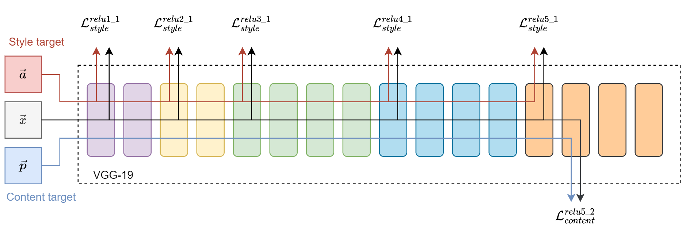
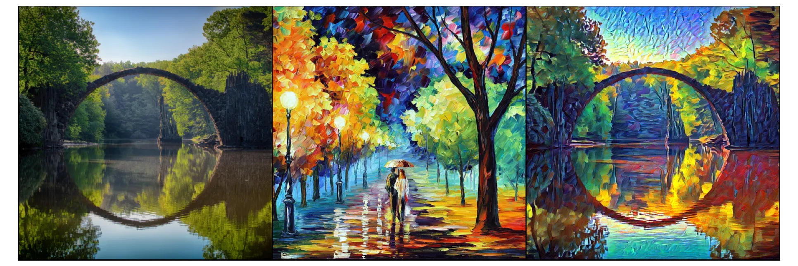
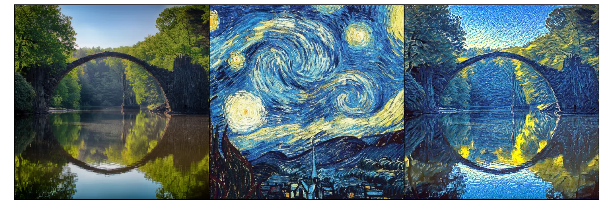
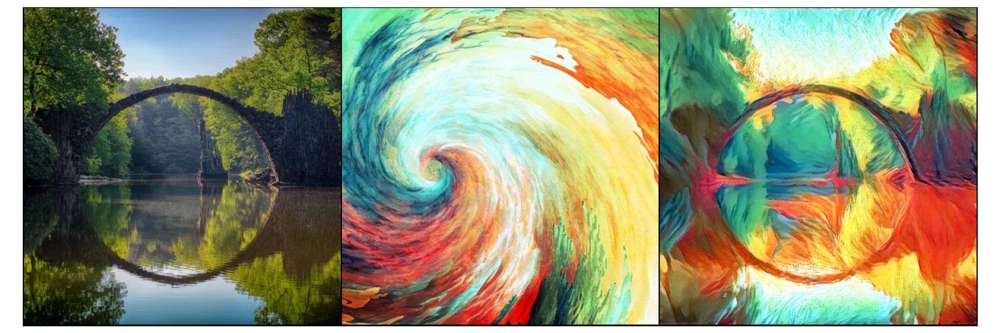

from pathlib import Path
from typing import List, Union
import numpy as np
from matplotlib import pyplot as plt
%config InlineBackend.figure_formats = {'retina', 'png'}
import torch
from PIL import Image
from torch import Tensor, nn, optim
from torch.nn import functional as F
from torchvision import models, transforms as T
from torchvision.transforms import functional as VF
from torchvision.utils import make_grid
from tqdm import tqdm
# Random seed for reproducibility
SEED = 42
# Size of the output image
IMG_SIZE = 512Neural Style Transfer
pytorch
NST
Abstract
Neural Style Transfer (NST) was a breakthrough deep learning approach that can transfer artistic style from one image to another. Eager to learn how it works, I’ve implemented the original approach from scratch.
Introduction
Neural Style Transfer (NST) is a deep learning technique that combines the content of one image with the style of another, like giving your photo a Van Gogh-esque makeover.
Using convolutional neural networks, NST examines both images’ features and creates a new image that merges the content’s structure with the style’s attributes. This technique became a hit due to its novel outcomes, leading to its adoption in various apps and platforms and highlighting deep learning’s prowess in image transformation.
Introduced initially in “A Neural Algorithm of Artistic Style” (Gatys, Ecker, and Bethge 2015), this method transfers art styles between images. Eager to learn how it works, I’ve implemented the original approach from scratch and presented a few cherry-picked transformed examples.
Prerequisites
Before we get started, we need to install NumPy, Matplotlib, PyTorch deep learning framework, and finally, Torchvision library.
Although it is possible to run neural networks on a CPU, using compute accelerators, such as GPU, will do transformation much faster. Here, I utilize my NVIDIA RTX 3090, where I also took advantage of available tensor cores and reduced precision data type bfloat16 for faster transformation.
AMP_ENABLED = False
device = torch.device("cuda" if torch.cuda.is_available() else "cpu")
if torch.cuda.is_available():
# Allow CuDNN internal benchmarking for architecture-specific optimizations
torch.backends.cudnn.benchmark = True
# Enable bfloat16 if supported
if torch.cuda.is_bf16_supported():
AMP_ENABLED = True
torch.set_float32_matmul_precision('medium')Implementation

Implementing NST was initially confusing since it does not follow the typical boilerplate used in deep learning. In the following sections, I’ll delve into its implementation step by step and often refer back to Figure 1. The steps are as follows:
- Prepare the content, style, and target images.
- Prepare a pre-trained VGG neural network and prevent changes to its weights.
- Introduce three unique loss metrics.
- Adjust the neural network to extract features during forward-backward passes, applying gradient modifications to the target image. The neural network stays unchanged in the process.
- Iterate through this process.
# Weights for different features (were these used by original authors?)
STYLE_LAYERS_DEFAULT = {
"conv1_1": 0.75,
"conv2_1": 0.5,
"conv3_1": 0.2,
"conv4_1": 0.2,
"conv5_1": 0.2,
}
CONTENT_LAYERS_DEFAULT = ("conv5_2",)
CONTENT_WEIGHT = 8 # "alpha" in the literature (default: 8)
STYLE_WEIGHT = 70 # "beta" in the literature (default: 70)
TV_WEIGHT = 10 # "gamma" in the literature (default: 10)
LEARNING_RATE = 0.004
N_EPOCHS = 5_000Loss metrics
To effectively implement Neural Style Transfer, we need to quantify how well the generated image matches both the content and style of our source images. This is done using loss metrics. Let’s delve into the specifics of these metrics and how they drive the NST process.
Content loss metric
Content loss is calculated through Euclidean distance (i.e., mean squared error) between the respective intermediate higher-level feature representation \(F^l\) and \(P^l\) of original input image \(\vec{x}\) and the content image \(\vec{p}\) at layer \(l\).
Hence, a given input image \(\vec{x}\) is encoded in each layer of the CNN by the filter responses to that image. A layer with \(N_l\) distinct filters has \(N_l\) feature maps of size \(M_l\), where \(M_l\) is the height times the width of the feature map. So the response in a layer \(l\) can be stored in a matrix \(F^l \in \mathcal{R}^{N_l \times M_l}\) where \(F_{ij}^{l}\) is the activation of the \(i^{th}\) filter at position \(j\) in layer \(l\).
\[ \mathcal{L}_{content}(\vec{p}, \vec{x}, l) = \frac{1}{2}\sum_{i,j} (F^{l}_{ij} - P^{l}_{ij})^2 \]
def content_loss_func(target_features, precomputed_content_features):
"""Calculate content loss metric for give layers."""
content_loss = 0.0
for layer in precomputed_content_features:
target_feature = target_features[layer]
content_feature = precomputed_content_features[layer]
content_layer_loss = F.mse_loss(target_feature, content_feature)
content_loss += content_layer_loss
return content_lossStyle loss
The style loss is more convolved than the content loss. We compute it by comparing the Gram matrices of the feature maps from the style image and the generated image.
First, let’s understand the Gram matrix. Given the feature map \(F\) of size \(C \times (H \times W)\), where \(C\) is the number of channels and \(H \times W\) are the spatial dimensions, the Gram matrix \(G\) is of size \(C \times C\) and is computed as
\[ G^l_{ij} = \sum_k F^l_{ik} F^l_{jk} \]
where \(G_{ij}\) is the inner product between vectorized feature maps \(i\) and \(j\). This results in a matrix that captures the correlation between different feature maps and, thus, the style information.
def gram_matrix(input: Tensor) -> Tensor:
(b, c, h, w) = input.size()
# reshape into (C x (H x W))
features = input.view(b * c, h * w)
# compute the gram product
gram = torch.mm(features, features.t())
return gramThe style loss between the Gram matrix of the generated image \(G\) and that of style image \(A\) (at a specific layer \(l\)) is:
\[ E_l = \frac{1}{4 N^{2}_{l} M^{2}_{l}} \sum_{i,j}(G^l_{ij} - A^l_{ij})^2 \]
Where \(E_l\) is the style loss for layer \(l\), \(N_l\) and \(M_l\) are the numbers of channels and height times width in the feature representation of layer \(l\), respectively. \(G_{ij}^l\) and \(A_{ij}^l\) are the gram matrices of the intermediate representation of the style image \(\vec{a}\) and the input base image \(\vec{x}\) respectively.
The total style loss is:
\[ \mathcal{L}_{style}(\vec{a}, \vec{x}) = \sum_{l=0}^{L} w_l E_l \]
def style_loss_func(target_features, style_features, precomputed_style_grams):
style_loss = 0.0
for layer in style_features:
target_feature = target_features[layer]
target_gram = gram_matrix(target_feature)
style_gram = precomputed_style_grams[layer]
_, c, h, w = target_feature.shape
weight = STYLE_LAYERS_DEFAULT[layer]
layer_style_loss = weight * F.mse_loss(target_gram, style_gram) / (c * h * w)
style_loss += layer_style_loss
return style_lossTotal Variation Loss
Total Variation (TV) loss, also known as Total Variation Regularization, is commonly added to the Neural Style Transfer objective to encourage spatial smoothness in the generated image. Without it, the output might exhibit noise or oscillations, particularly in regions where the content and style objectives don’t offer much guidance.
Given an image \(\vec{x}\) of size \(H \times W \times C\) (height, width, channels), the Total Variation loss is defined as the sum of the absolute differences between neighboring pixel values:
\[ \mathcal{L}_{TV}(\vec{x}) = \sum_{i,j} ((x_{i,j+1} - x_{i,j})^2 + (x_{i+1,j} - x_{i,j})^2) \]
where \(x_{i,j}\) is the pixel value at position \((i,j)\).
In simple terms, this loss penalizes abrupt changes in pixel values from one to its neighbors. By minimizing this loss, the generated image becomes smoother, reducing artifacts and unwanted noise. When combined with content and style losses, the TV loss ensures that the resulting image not only captures the content and style of the source images but also looks visually coherent and smooth.
def total_variance_loss_func(target: Tensor):
tv_loss = F.l1_loss(target[:, :, :, :-1], target[:, :, :, 1:]) \
+ F.l1_loss(target[:, :, :-1, :], target[:, :, 1:, :])
return tv_lossTotal Loss
The total loss combines three loss metric components, each targeting a specific aspect of the image generation process. Let’s recap the components:
- Content Loss: Ensures the generated image resembles the content image’s content.
- Style Loss: Ensures the generated image captures the stylistic features of the style image.
- Total Variation Loss: Encourages spatial smoothness in the generated image, reducing artifacts and noise.
Given the above components, the total loss \(\mathcal{L}_{total}\) for Neural Style Transfer can be formulated as:
\[ \mathcal{L}_{total}(\vec{p},\vec{a},\vec{x}) = \alpha\mathcal{L}_{content}(\vec{p},\vec{x}) + \beta\mathcal{L}_{style}(\vec{a},\vec{x}) + \gamma\mathcal{L}_{TV}(\vec{x}) \]
\(\alpha\), \(\beta\), and \(\gamma\) are weight factors that determine the relative importance of the content, style, and the total variation losses, respectively. By adjusting these weights, one can control the balance between content preservation, style transfer intensity, and the smoothness of the generated image. The algorithm aims to adjust the generated image to minimize the total loss.
Input preparation
Here we specify path to content and style images:
content_path = "./bridge.jpg"
style_path = "./walking-in-the-rain.jpg"Neural Style Transfer Process
For feature extraction, we’ll leverage VGG19, pre-trained on ImageNet, same as the original authors. Note that we set the model to evaluation mode, ensuring we only use VGG19 to extract features without altering its weights. We also transfer the neural network (NN) to a chosen device, ideally a GPU, for optimal performance.
Note
An intriguing choice by Gatys et al. was to modify VGG-19, replacing max pooling with average pooling, aiming for visually superior results. However, a challenge arises: our NN was initially trained with MaxPool2d layers. Substituting them can affect activations due to reduced output values. To counteract this, we’ve introduced a custom ScaledAvgPool2d.
# We will use a frozen pre-trained VGG neural network for feature extraction.
# In the original paper, authors have used VGG19 (without batch normalization)
model = models.vgg19(weights=models.VGG19_Weights.IMAGENET1K_V1).features
# Authors in the original paper suggested using AvgPool instead of MaxPool
# for more pleasing results. However, changing the pooling also affects
# activation, so the input needs to be scaled (can't find the original source).
class ScaledAvgPool2d(nn.Module):
def __init__(self, kernel_size, stride, padding=0, scale_factor=2.0):
super().__init__()
self.avgpool = torch.nn.AvgPool2d(kernel_size, stride, padding)
self.scale_factor = scale_factor
def forward(self, x):
return self.avgpool(x) * self.scale_factor
# (OPTIONAL) Replace max-pooling layers with custom average pooling layers
#for i, layer in enumerate(model):
# if isinstance(layer, torch.nn.MaxPool2d):
# model[i] = ScaledAvgPool2d(kernel_size=2, stride=2, padding=0)
model = model.eval().requires_grad_(False).to(device)The pretrained VGG model used normalized ImageNet samples for better performance. For effective style transfer, we’ll follow suit to improve feature extraction. Though images will appear altered post-normalization, they are reverted to their original state after the NST process. Next, we’ll transform the content and style images by:
- Loading them from storage.
- Resizing while maintaining aspect ratio.
- Converting to tensors.
- Normalizing using ImageNet weights.
# ImageNet normalization weights per channel
IMAGENET_MEAN = (0.485, 0.456, 0.406)
IMAGENET_STD = (0.229, 0.224, 0.225)
transform = T.Compose([
# Shorter edge of the image will be matched to `IMG_SIZE`
T.Resize(IMG_SIZE),
T.ToTensor(),
T.Normalize(IMAGENET_MEAN, IMAGENET_STD),
])
def load_image(path: Union[str, Path]) -> Tensor:
image = Image.open(path).convert("RGB")
# Transform images into tensors
image = transform(image)
# Add dimension to imitate batch size equal to 1: (C,H,W) -> (B,C,H,W)
image = image.unsqueeze(0)
return imageThe following code will prepares content \(\vec{p}\), style \(\vec{a}\), and target \(\vec{x}\) images. The target image is a clone of the content image and we enable computation of gradients on it.
# The "style" image from which we obtain style
style = load_image(style_path).to(device)
# The "content" image on which we apply style
content = load_image(content_path).to(device)
# The "target" image to store the outcome
target = content.clone().requires_grad_(True).to(device)The function below retrieves feature maps from designated layers. As shown in Figure 1:
- Content feature map comes from
relu5_2. - Style feature maps are sourced from
relu1_1,relu2_1,relu3_1,relu4_1, andrelu5_1.
def get_features(image: Tensor, model: nn.Module, layers=None):
if layers is None:
layers = tuple(STYLE_LAYERS_DEFAULT) + CONTENT_LAYERS_DEFAULT
features = {}
block_num = 1
conv_num = 0
x = image
for layer in model:
x = layer(x)
if isinstance(layer, nn.Conv2d):
# produce layer name to find matching convolutions from the paper
# and store their output for further processing.
conv_num += 1
name = f"conv{block_num}_{conv_num}"
if name in layers:
features[name] = x
elif isinstance(layer, (nn.MaxPool2d, nn.AvgPool2d, ScaledAvgPool2d)):
# In VGG, each block ends with max/avg pooling layer.
block_num += 1
conv_num = 0
elif isinstance(layer, (nn.BatchNorm2d, nn.ReLU)):
pass
else:
raise Exception(f"Unknown layer: {layer}")
return featuresSince content and style images never change, we can precompute their feature maps and grams to speed up the NST process.
# Precompute content features, style features, and style gram matrices.
content_features = get_features(content, model, CONTENT_LAYERS_DEFAULT)
style_features = get_features(style, model, STYLE_LAYERS_DEFAULT)
style_grams = {layer: gram_matrix(style_features[layer]) for layer in style_features}Next, we will use Adam optimizer, where we specify that only target image \(\vec{x}\) is considered for optimization.
optimizer = optim.Adam([target], lr=LEARNING_RATE)The final step of NST is to transfer style using everything we’ve implemented. We extract feature maps, compute total loss, perform steps using gradient descent, and repeat the process N_EPOCHS times. Gradient changes will apply only to the target image.
To notably enhance NST speed, I utilized mixed precision with the unique bfloat16 found in newer hardware. Traditional half-precision float16 doesn’t yield the same results. I’ve tested it. Probably because of the issue with gradient scaling.
pbar = tqdm(range(N_EPOCHS))
for step in pbar:
with torch.autocast('cuda', dtype=torch.bfloat16, enabled=AMP_ENABLED):
target_features = get_features(target, model)
content_loss = CONTENT_WEIGHT * content_loss_func(target_features, content_features)
style_loss = STYLE_WEIGHT * style_loss_func(target_features, style_features, style_grams)
tv_loss = TV_WEIGHT * total_variance_loss_func(target)
total_loss = content_loss + style_loss + tv_loss
optimizer.zero_grad(set_to_none=True)
total_loss.backward() # do I need to `retain_graph=True`?
optimizer.step()
pbar.set_postfix_str(
f"total_loss={total_loss.item():.2f} "
f"content_loss={content_loss.item():.2f} "
f"style_loss={style_loss.item():.2f} "
f"tv_loss={tv_loss.item():.2f} "
)100%|███████████████| 5000/5000 [01:30<00:00, 55.25it/s, total_loss=43.89 content_loss=8.71 style_loss=29.08 tv_loss=6.10 ]As mentioned before, images need to be denormalized (i.e. reverted back) to correct colors. After that we compare content, style and target images side-by-side.
class InverseNormalize(object):
def __init__(self, mean, std):
self.mean = mean
self.std = std
def __call__(self, x: Tensor) -> Tensor:
for t, m, s in zip(x, self.mean, self.std):
t.mul_(s).add_(m)
return x
class Clip(object):
def __init__(self, vmin: float = 0.0, vmax: float = 1.0):
self.vmin = vmin
self.vmax = vmax
def __call__(self, x):
return torch.clamp(x, self.vmin, self.vmax)
inv_transform_preview = T.Compose([
InverseNormalize(IMAGENET_MEAN, IMAGENET_STD),
T.Resize(IMG_SIZE, antialias=True),
T.CenterCrop((IMG_SIZE, IMG_SIZE)),
Clip(),
])
imgs = [
inv_transform_preview(i.detach().squeeze().cpu())
for i in (content, style, target)
]
grid = make_grid(imgs)
def show(imgs):
if not isinstance(imgs, list):
imgs = [imgs]
fig, axs = plt.subplots(ncols=len(imgs), figsize=(21, 7), squeeze=False, dpi=92, tight_layout=True, frameon=False)
for i, img in enumerate(imgs):
img = img.detach()
img = VF.to_pil_image(img)
axs[0, i].imshow(np.asarray(img))
axs[0, i].set(xticklabels=[], yticklabels=[], xticks=[], yticks=[])
show(grid)
Conclusions
Neural Style Transfer (NST) was a breakthrough deep learning approach that can transfer artistic style from one image to another. The key takeaway from my experience is the incredible potential of neural networks in merging art and tech, seamlessly blending the styles of different artworks with original images.
What stood out was the use of a pre-trained neural network for feature extraction, extracting feature maps from particular layers, and then the ability to balance the content and style weight parameters to maintain the essence of the original image while effectively imitating the artistic style.
Although the NST achieves pleasing results, it was soon overshadowed by faster and more advanced methods, such as DALL-E, Stable Diffusion, and Midjourney. However, it represented a significant milestone toward artistic AI and generative AI models.
Acknowledgements
Helpful articles and code repositories while writing my implementation:
- Gregor Koehler et al. gkoehler/pytorch-neural-style-transfer (best resource in my opinion)
- Ritul’s Medium article (good resource)
- Pragati Baheti blog visually present style extraction
- Aleksa Gordić (gordicaleksa/pytorch-neural-style-transfer)
- ProGamerGov/neural-style-pt
- Katherine Crowson (rowsonkb/style-transfer-pytorch)
- Derrick Mwiti’s Medium article
- Aman Kumar Mallik’s Medium article
I want to acknowledge the following artworks:
- “Gray Bridge and Trees” by Martin Damboldt
- “Walking in the Rain” by Leonid Afremov
- “The Starry Night” by Vincent van Gogh
For a complete list of acknowledgments, please visit my GitHub repository:
Appendix
Examples
A few cherry-picked examples of style transfer:
  
References
Gatys, Leon A, Alexander S Ecker, and Matthias Bethge. 2015. “A Neural Algorithm of Artistic Style.” arXiv Preprint arXiv:1508.06576.